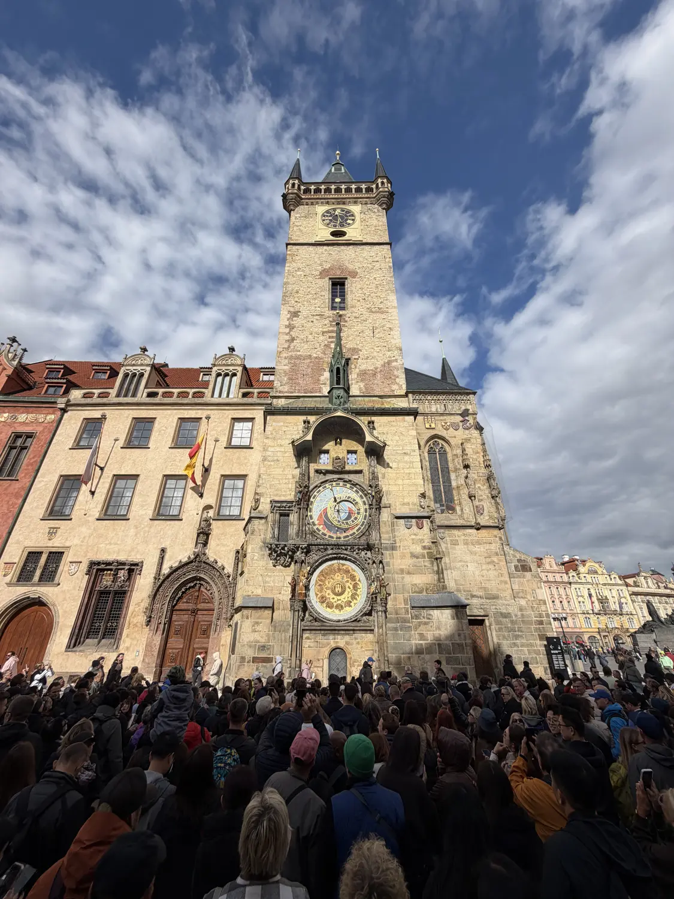
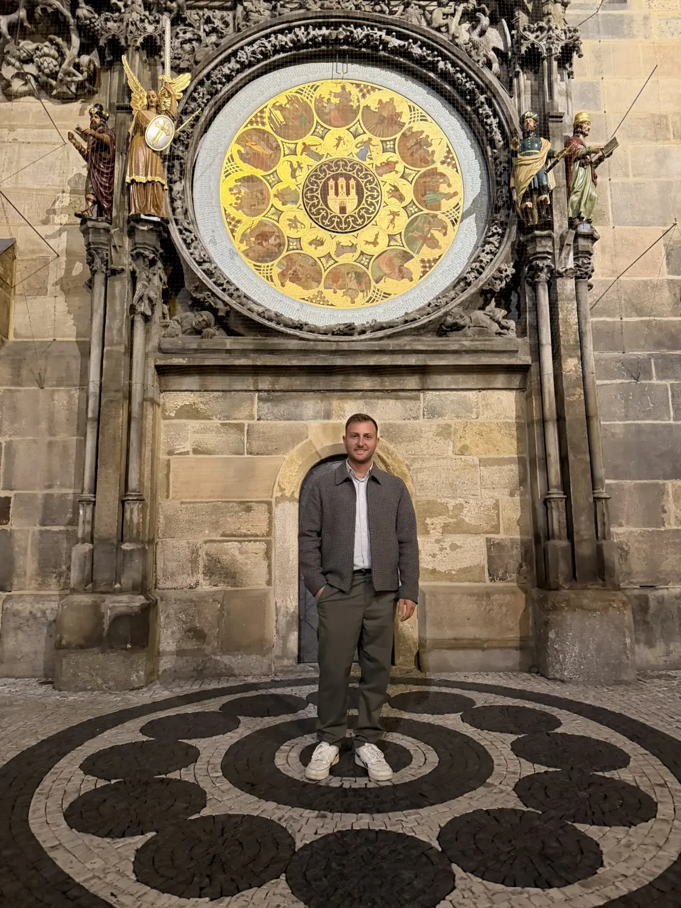
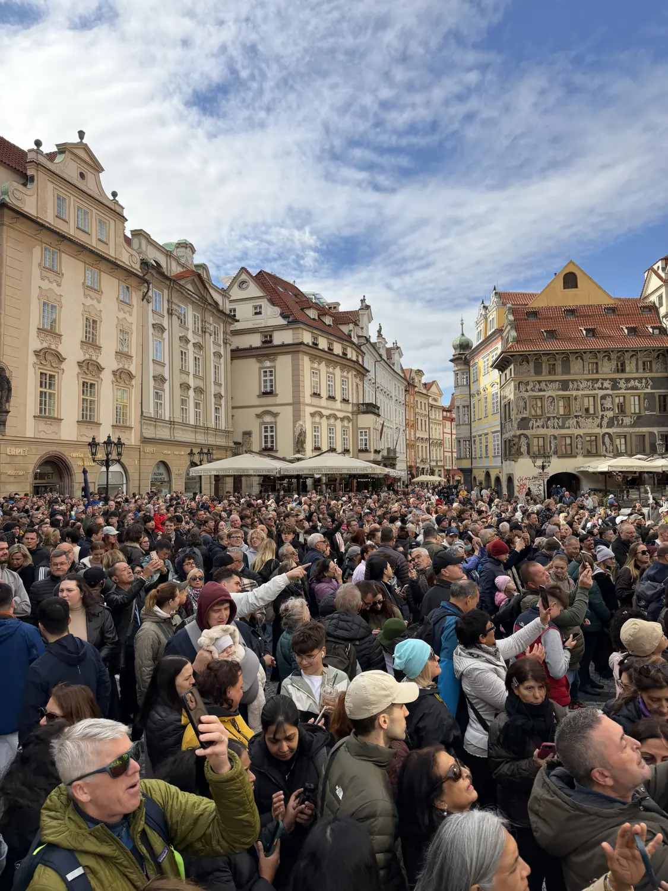

Must-see01
The Astronomical Clock show
📍 Old Town Square
Watching the Astronomical Clock show is a must. Every hour, crowds pack into the square below the Old Town Hall as the apostles appear and the skeleton rings its bell. The clock dates back to 1410 and is the oldest one still working. Arrive a few minutes early to get a good spot, and keep an eye on your bags in the crowd.
Shows on the hourArrive early